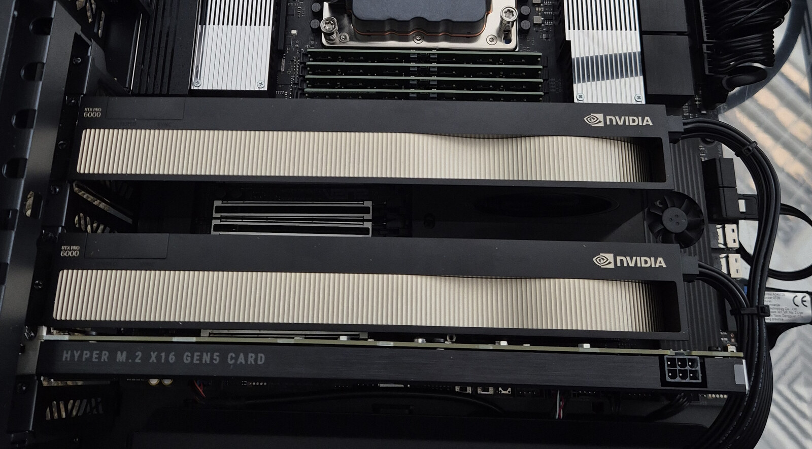

ARGODRIVE DS4 KIMI K3.1 / SETUP + BENCHMARKS
Run Kimi K3.1 Pro locally
on one GPU.
Tested: 96 GB RTX PRO 6000 Blackwell · 70 GiB VM RAM · five NVMe drives · 1.45 TB of unique experts.
Measured decode is about 2 tok/s on the short chat test (7 November) and 3.05 tok/s on predictable raw text with the Qwen drafter (8 November). Sparse attention is measured up to 16,384 tokens of context; the long-prompt tests decode at 1.48–1.51 tok/s. This is an experimental port, not a validated replacement for Moonshot’s reference implementation.
Argodrive DS4 Kimi K3.1 is the integrated engine. One source build includes the CUDA port, NVMe streaming, caches and weight-preparation tools. Download the model weights separately.
Can I run Kimi K3.1 Pro locally on one GPU?
Yes, using this experimental CUDA port on one RTX PRO 6000 Blackwell with 96 GB of VRAM. Argodrive DS4 Kimi K3.1 streams the selected experts from NVMe through GPU and host-memory caches. The measured machine also has 70 GiB of VM RAM and five physical NVMe devices arranged as three storage tiers. The full model does not need to fit in GPU memory. This is explicit expert streaming, not operating-system swap or a cloud API.
Current release: 8 November measurements.
These are the fp32-activation release results, on commit b959c89. The short-chat figure above comes from the 7 November release and is dated separately. The older tables below remain unchanged.
| Test | Prefill | Decode |
|---|---|---|
| “The three main financial statements are” (6 tokens), 128 generated (tg128) | — | 2.88 tok/s |
| 512-token prompt, 128 generated (pp512 / tg128) | 18.0 tok/s | 2.66 tok/s |
| 1,512-token prompt, 128 generated (pp1512 / tg128) | 43 tok/s | 2.45 tok/s |
| the same 6-token prompt, 512 generated | — | 3.05 tok/s |
Source: 8 November raw results and timing conditions. Short standard runs use a 2,048-token context cache; the long-context measurements use 4k–16k caches. These are measured workloads, not guaranteed rates for other prompts.
The same engine on a MacBook Pro: 2.04 tok/s.
Since 9 November the engine also runs Kimi K3.1 Pro on Apple silicon, through Metal, on a MacBook Pro with an M5 Max and 128 GB of unified memory. The 62 GB spine and a 40 GB expert cache sit in unified memory; the expert files stream from the internal SSD and two Thunderbolt 5 NVMe drives. Each missed expert is read from every drive that holds it at once, split so the drives finish together. The Metal path computes with fp32 activations, and with the drafter on, the logits of 2,955 positions matched plain decoding.
| Test | Prefill | Decode |
|---|---|---|
| “The three main financial statements are” (6 tokens), 128 generated (tg128) | — | 1.93 tok/s |
| 512-token prompt, 128 generated (pp512 / tg128) | 8.4 tok/s | 1.47 tok/s |
| the same 6-token prompt, 512 generated | — | 2.04 tok/s |
13.7 GB/s
71,866 expertsThe most used experts and most of the rest.
7.1 GB/s
44,166 expertsThe other 10,566, plus copies of the 33,600 most used.
7.1 GB/s
82,432 copiesA full copy: every expert has at least two homes.
Plain decode on the 6-token prompt: 1.40 tok/s over 128 tokens and 1.29 over 512. Source: 9 November raw results and timing conditions. Setup: Apple silicon guide.
Decode and prefill are different measurements.
The November 6 runs use a Q8_0 spine, MXFP4 experts, a full-precision attention cache and greedy decoding. There is no speculative drafter or expert skipping. Monitoring was off. The tables retain every reported repeat.
| Generated tokens | Steady decode, tok/s | Prompt pass, s | Process wall, s |
|---|---|---|---|
| 128 · repeat 1 | 2.04 | 17.25 | 90.275 |
| 128 · repeat 2 | 2.04 | 17.23 | 90.274 |
| 512 · repeat 1 | 1.94 | 17.34 | 291.319 |
| 512 · repeat 2 | 1.94 | 17.35 | 291.323 |
Steady decode divides the tokens after the first by the elapsed time after the first token. It excludes model loading, prefill and the first decode step. Process wall includes startup through exit. Neither the prompt-pass duration nor the steady rate is an end-to-end time-to-first-token measurement.
Measured prompt processing, not output generation speed.
| Prompt tokens | Prompt pass, s | Expert reads, GB | Generated tokens | Generation tok/s |
|---|---|---|---|---|
| 270 | 25.38 / 25.34 | 924.53 | 200 | 1.96 / 1.93 |
| 618 | 31.71 / 31.51 | 1,122.31 | 200 | 1.90 / 1.90 |
| 1,533 | 36.81 / 37.12 | 1,240.82 | 8 | Too short to quote |
Here generation rate is generated tokens divided by the reported decode duration, including the first step; it differs from the steady metric above. Expert bytes are the reported prompt-pass read volume, not an independently reconciled physical-device counter. The eight-token run supports the prefill measurement only.
Prompt length grows 5.7× from 270 to 1,533 tokens, while the prompt pass grows from about 25 to 37 seconds. More tokens reuse experts already needed by the batch. The longer prompt reads about 86% of the expert payload once; its higher tok/s is not a 41 tok/s decode claim.
Short-prompt measurements: why startup matters
“The capital of France is” is a five-token raw prompt. With 17 generated tokens, sequential prefill reached 2.07 / 2.08 / 2.08 steady tok/s and 29.329 / 29.231 / 29.131 seconds process wall. Default batched prefill reached 1.98 / 1.97 / 1.96 steady tok/s and 36.135 / 36.032 / 36.034 seconds wall. These arithmetic paths can produce different text. A short-answer rate alone hides much of the time a user waits.
A drafter that leaves the answer unchanged.
Since 7 November there is an optional drafter. Qwen3-0.6B-Base proposes up to fifteen next tokens from the text so far, stopping at the first one below a confidence gate. The engine checks a proposal in one block of up to 16 rows, the current token plus the drafts, and keeps the drafts up to the first one Kimi disagrees with. With no proposal it takes an ordinary decode step. The tokens it emits are always Kimi’s own choices.
| Prompt | Generated | Plain, tok/s | With drafter, tok/s | Gain | Drafts accepted | Tokens from blocks |
|---|---|---|---|---|---|---|
| “The three main financial statements are” | 128 | 2.02 | 2.90 / 2.92 | +44% | 97 of 107 | 91% |
| same | 200 | 1.98 / 1.99 | 3.10 / 3.11 | +56% | 164 of 174 | 94% |
| same | 512 | 1.88 | 3.11 | +65% | 443 of 459 | 96% |
| The public 512-token benchmark prompt | 200 | 1.52 / 1.53 | 2.64 / 2.67 | +74% | 185 of 185 | 99% |
| A 286-token chat prompt, chat settings | 200 | 1.92 / 1.94 | 2.01 / 2.02 | +4% | 35 of 39 | 24% |
The speed comes from the storage. A block reads each expert once for all its rows, so a full 16-row block takes about 3.8 s against about 8 s for sixteen plain steps. Two changes on 7 November made blocks cheaper and wider. The spine’s matrix multiplies now load each weight once for up to eight rows instead of once per row, which took the record prompt over 200 tokens from 2.81 to 2.97 tok/s. And a block may take from 2 to 16 rows instead of exactly 8, which took it to 3.10. The cache needed one change: a block touches more experts than the caches hold, so plain least-recently-used eviction got no hits at all. Keeping only the experts that enough of the block’s rows use cut a block’s disk reads by a quarter to a third.
The answers are the same. A block’s rows run the same arithmetic as plain steps. In the 7 November release’s runs we hashed the logits of 3,416 positions in both paths and found no differing bit, and of 3,800 in the 8 November release’s; the first drafter release’s checks covered 5,325 positions and every layer of 40. The token IDs match, over all 512 tokens of the long run too. That includes forced rejections of the first, a middle and the last draft, short proposals, an end-of-text token inside a block, and a drafter that crashes or answers garbage, which falls back to plain decoding. This is evidence from these runs on this GPU and driver, not a proof for every input.
Chat gains a little, with a stricter gate. Qwen is rarely right for long on chat text. With the raw settings the drafter made a 286-token chat prompt slower, 1.80 tok/s against 1.95. With a gate that starts at 0.9 and adapts to how the last proposal fared, it went from 1.92 / 1.94 to 2.01 / 2.02 tok/s. That’s a small gain, so the drafter stays off for chat unless you ask for it. The gain depends on how predictable the text is, and the raw prompts above are predictable. France, a 5-token prompt with 17 tokens generated, fires 2 blocks: 2.17 / 2.19 / 2.20 tok/s against 1.95 plain.
Long context with sparse attention, and fp32 activations.
Since 8 November the engine runs K3.1’s sparse attention. Each of the 24 attention layers attends to the 2,048 positions its indexer scores highest; against a float64 reference the selections were identical. The attention cache keeps each position’s latent row, 105 KB instead of 2.95 MB, and rebuilds keys and values exactly before every attention step. Up to 2,048 tokens nothing changes.
| Prompt | Context cache | Prompt pass | First token | Decode, tok/s |
|---|---|---|---|---|
| A 6,769-token chat prompt | 8,192 | 60.0 s (46.7) | 77.6 s (64.1) | 1.51 (1.53) |
| A 13,167-token chat prompt, two chunks | 16,384 | 124.4 s (98.2) | 141.9 s (115.7) | 1.48 (1.40) |
| A 3,545-token raw prompt | 4,096 | 45.1 s (38.8) | — | 1.69 (1.77) |
A long prompt pass reads almost every expert of every layer once: the 6,769-token pass waits about 34 s on 1.4 TB of expert reads. Through the chat endpoint at an 8k cache a 6,753-token request took 77.7 s. Asked again, it took 27.5 s from the saved prefix and gave the same answer; a third time, after another request in between, 27.6 s with logits identical to the second.
The spine now computes in fp32. Earlier releases rounded each activation vector to int8 before every Q8_0 matrix multiply, as ds4’s fast path does: about 1e-3 per multiply against float64, enough to flip a near-tie. With fp32 activations two of the published test answers changed: “The capital of France is” at its sixth token, where two candidates were 0.08 logits apart, and the record prompt at 512 tokens from token 356. It costs a few percent at short context (the record prompt with the drafter: 2.88 tok/s at 128 tokens and 3.05 at 512, against 2.93 and 3.14) and about 13 s on an 8k prompt pass. At 16k decode is faster than before, because the cache rebuilds only the positions attention reads. The drafter still gives the same tokens as plain decoding: 3,800 logit vectors compared, none differing.
One GPU, three storage tiers.
The tested environment is a 70 GiB VM on a Threadripper host with one 96 GB RTX PRO 6000 Blackwell. The reported allocation includes a 27.5 GB device expert cache and a 53.7 GB pinned host pool. The non-expert spine resides in VRAM, with matrices quantised to Q8_0.

3 NVMe devices
79,365 expertsThe hottest experts occupy the primary array.
1 NVMe device
41,078 expertsCompletes the model’s coverage and holds additional copies.
1 NVMe device
74,000 copiesReplicas give the read scheduler another source.
The union of tiers A and B holds all 82,432 experts. Each expert is a 17,547,264-byte MXFP4 file; the unique expert payload is about 1.45 TB. Replica counts overlap and are not additional model parameters. Checkpoint downloads, the spine and replicas require storage beyond that unique payload.
Read the experts the router needs.
Illustrative activity, not live telemetry or a recorded trace. Colours show possible sources, not measured hit rates.
Kimi K3.1 Pro has 92 MoE layers, 896 experts per layer and 16 selected experts per token. The engine keeps the resident computation on the GPU and schedules the selected experts through three paths:
- Use a cached expert. A device-cache hit is ready to compute; a host-pool hit needs an upload.
- Choose a disk source by expected completion time. Available replicas, assumed read rates and in-flight work determine where a read is sent. Decode fills use two chunks; prompt-pass fills use whole files by default.
- Overlap arrivals with useful work. O_DIRECT readers fill a pinned arena. Expert computation starts as slabs arrive, with per-tier concurrency caps, eight upload streams and shallow next-layer prefetch.
A layer still waits for its last required expert. More drives help only if placement and scheduling reduce that wait. The documented rates and queue limits are tuning inputs for this machine, not a universal optimal configuration.
Get Argodrive DS4 Kimi K3.1. Build, prepare, run.
Installing for the first time? Follow the step-by-step Kimi installation guide for download, extraction, conversion and first-run commands. The summary below pins the benchmark engine.
- Get and build this repository. The ds4-based runtime and Kimi support are already integrated.
- Download the Kimi K3.1 checkpoint separately. Use the included tools to prepare the spine and expert files for your NVMe storage.
- Run the included engine. Use the command-line interface or its OpenAI-compatible chat endpoint. The Qwen drafter is optional.
Get the source from argodrive-ds4-kimi-k3.1. This is a source release, not a prebuilt installer; model weights are not bundled. Use a compatible NVIDIA driver, CUDA toolkit, C/C++ build tools and Python dependencies for weight preparation. This checkout pins the 8 November release (tag k31-cuda-20261108) used for the 3.05 tok/s drafter result and the long-context measurements. The drafter is optional and needs the additional setup below.
git clone https://github.com/argonautlabsai/argodrive-ds4-kimi-k3.1.git
cd argodrive-ds4-kimi-k3.1
git checkout k31-cuda-20261108
make ds4 CUDA_ARCH=sm_120Prepare the checkpoint using k31_extract.py and k3_spine_to_gguf.py. The spine metadata records the primary and secondary expert directories. The weight-layout guide explains sparse-file requirements and the optional third and fourth directories. For contexts above 2,048 tokens, also cut the indexer weights out of the checkpoint with k31_indexer_extract.py and add DS4_K3_DSA=k31-indexer.bin DS4_K3_CACHE_CAP=16384 with -c 16384.
With the converted spine and all expert files in place, this is the plain, drafter-off 128-token financial-prompt configuration. Replace the example paths with your own prepared files:
DS4_K3_EXPERT_DIR_C=/data/tier-c/experts \
./ds4 -m /data/kimi/k3-spine.gguf \
--cuda --ssd-streaming --ssd-streaming-cold \
--ssd-streaming-cache-experts 16 \
--temp 0 -c 2048 -n 128 \
-p "The three main financial statements are"Repeat with a fresh process, then change -n 128 to -n 512 for the longer run. Record the engine’s K3 decode split steady rate and process wall separately. Leave the full-precision attention-cache default in place. Measure your storage before changing the scheduler’s rate assumptions.
The optional drafter needs commit 6808130 or later (c0dcf69 had the first version; the 8 November results are from b959c89), Python with CUDA torch, transformers, tokenizers, tiktoken and regex, and the Qwen3-0.6B-Base checkpoint. The README has the settings.
The public JSON contains the raw completion prompts, individual measurements and chat prompt lengths. It does not include the full chat prompt texts or an exact expert-placement manifest; it is not a complete reproduction bundle for every chat row or this machine’s disk layout. The timings above are recorded results, not a performance guarantee for another setup.
What is established—and what remains open.
Since 7 November, runs with the optional drafter match plain decoding bit for bit in everything we compared: 3,800 logit vectors in the 8 November release’s runs, 3,416 in the 7 November release’s and 5,325 in the first drafter release’s, and every token ID, across 128, 200 and 512 generated tokens, the public prompt and chat. Details above.
Repeats of the same configuration produced identical token IDs in the fresh-process tests, or identical text through the chat endpoint. The project also reports matching 128- and 512-token outputs with and without resident-first expert ordering.
That does not establish equality across arithmetic paths. Sequential versus batched prefill, attention-cache precision and expert GEMM choices can change near-tie tokens. Nor does repeatability validate the Q8_0 spine against the original model. No comparison with Moonshot’s own implementation has been completed.
Sparse attention is implemented since 8 November. Its selections matched a float64 reference at 3,546 positions on three layers, and the latent attention cache gave the same logits as the dense cache where both fit (tested before the fp32 change). A prompt pass’s matrix multiplies depend on how the pass is batched, so a long prompt split into chunks, or a prefix the server reuses, can end differently from one whole pass. Since 8 November the spine’s activations are fp32; against the int8 release two published test answers changed at near-ties. None of this is a comparison with Moonshot’s implementation.
These results concern K3.1 Pro on CUDA, apart from the MacBook Pro section, which runs the same engine through Metal. Earlier Kimi K3 results on a Mac used a different model version, backend, hardware and drafting configuration, so they are not a controlled speedup baseline for this article.
Kimi K3.1 Pro local inference: common questions.
Can I run Kimi K3.1 Pro at home?
Yes, on the tested workstation-class setup described here. This is local inference with downloaded weights and NVMe expert streaming, not a cloud API. “One GPU” does not mean a typical gaming PC: the measurements use a 96 GB GPU, 70 GiB of VM RAM and five NVMe devices. Start with the installation guide and check storage capacity before downloading.
What hardware do I need?
The published setup uses one 96 GB RTX PRO 6000 Blackwell, 70 GiB of RAM assigned to an Ubuntu VM, and five NVMe devices. The unique expert files occupy about 1.45 TB; allow additional space for the checkpoint, spine and replicas. These are tested conditions, not proven minimum requirements. This article does not establish that the port runs on a 24 GB or 32 GB GPU. On a Mac, the tested setup is a MacBook Pro with an M5 Max and 128 GB of unified memory, its internal SSD and two Thunderbolt 5 NVMe drives (2.04 tok/s).
Is Kimi generating 43 tokens per second?
No. 43 tok/s is prompt processing (prefill) on a 1,512-token prompt. 3.05 tok/s is measured decode on a predictable raw financial-text completion with the optional Qwen drafter. The tested chat prompt reached 2.01–2.02 tok/s with its chat settings. Prompt, output length and timing definition matter; see the complete drafter table.
Does the drafter replace Kimi with a smaller model?
No. Qwen proposes tokens and Kimi verifies them. The published tests produced the same token IDs as plain decoding, including the 512-token run. This comparison is against this port’s plain path; it is not validation against Moonshot’s reference implementation.
Do I need to install ds4 and the Argodrive Mac app separately?
No. Argodrive DS4 Kimi K3.1 already includes the ds4-based runtime, the Kimi port and NVMe streaming. Build this repository for the Linux/NVIDIA setup. Argodrive is the separate storage measurement and monitoring project. Earlier Deltafin results concern Kimi K3 on Apple silicon, not this K3.1 CUDA benchmark.
Can I just download and run it?
Download or clone the engine source, build it with CUDA, and prepare the separately downloaded Kimi weights using the included tools. There is currently no prebuilt installer or bundled model. The setup instructions and tested hardware describe what you need.
Is this full long-context Kimi K3.1 support?
Partly. Since 8 November the engine runs K3.1’s sparse attention, measured at 4k, 8k and 16k tokens of context; the attention kernels accept up to 25,088 positions on this GPU, and longer contexts have not been measured. A long prompt pass takes about a minute at 8k and two at 16k. It has not been compared with Moonshot’s implementation. Read the validation limits before choosing it for your workload.
CODE / DATA / NEXT STEPS
Inspect the work. Reproduce the measurements.
- The long-context and fp32 release runs, as JSON
- Every reported run, as JSON
- The wider-block drafter runs, as JSON
- The first drafter runs, as JSON
- Long context and fp32 activations: release k31-cuda-20261108 (commit b959c89)
- The wider-block drafter commit: 6808130
- The first drafter commit: c0dcf69
- Pinned CUDA release: k31-cuda-20261105
- Configuration knobs, layout and arithmetic comparisons
- Argodrive: storage measurement and monitoring tools
This port builds on Salvatore Sanfilippo’s ds4, with its acknowledgements to llama.cpp and GGML preserved. The Kimi checkpoint is Moonshot’s work. Argonaut Labs develops the port and storage experiments with assistance from Claude and ChatGPT, with human-led testing and review.
The CUDA engine and the Argodrive Mac app are separate projects. The benchmark was run with monitoring off. Better storage placement and overlap remain useful research directions; reference-model validation remains an important next step.